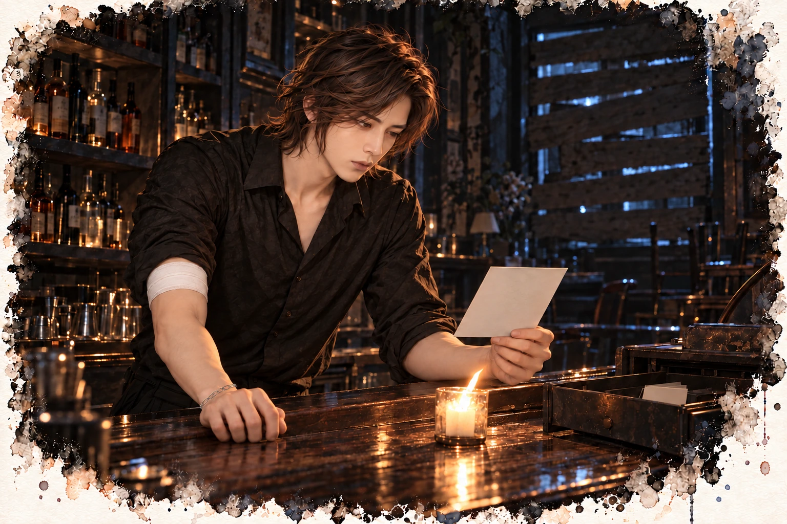

沒有招牌的酒吧 · 第一部
第五章 照片上是誰？
敘事視角溫寧
他們找到了。醒來的時候，胸口很痛。
痛得很實在，一吸氣就從胸骨中間往兩邊裂開。我第一個念頭是：是心臟。它又出事了。
我躺著不敢動，數自己的心跳。一下，一下，沒有亂。旁邊監視器的聲音也跟著它走。
可是吸氣的時候，胸口還是痛。我把那口氣放輕，不敢吸到底。
護理師進來換點滴，看見我睜著眼睛，眼角彎起來。
「醒了？胸口會痛對不對？那是壓出來的。」她用手比了一下，「做心肺復甦要壓很深，妳的胸口瘀青了一大片，肋骨有一點裂，不嚴重，會好。」
我拉開一點領口，胸前露出一片青紫，右上胸還有一塊方形的紅痕。
再掀起左側衣襬，肋骨下方也有一塊。
電擊片。
來藥局之前，我在醫院的藥劑部待過三年。
那三年，我每天推著藥車，經過一間一間病房。我知道 AED 那兩片要貼在哪裡，知道機器會說什麼話，知道按下去的那一刻，病人的身體會彈起來。
後來我離開了。
醫院太吵了。走廊的廣播，監視器的警報，半夜突然響起來的急救鈴聲。每一聲，我的心臟都要撞一下。
我去了一間很小、很安靜的藥局。一站，就是七年。
把門鈴調到最小，把手機設成震動，把會響的東西一件一件從生活裡拿掉。結果還是倒下了，在我自己的店門口。
我教過很多人怎麼用 AED。
我從來沒有想過，自己胸口會留下這兩塊印子。
十點，醫生來查房。四十多歲，說話很慢，很清楚。
「溫小姐，妳這次是心跳停止，被救回來的。」他翻著病歷，「妳本身的長 QT，加上這次的事件，我們會建議植入去顫器。」
我點頭。
我知道那是什麼。一台比火柴盒大一點的機器，埋在鎖骨下面的皮膚裡，導線接進心臟。它會一直監聽我的心跳，一旦亂掉，它會自己放電，把我救回來。
醫生說明手術、風險，還有之後要注意的事。我都聽懂了。
聽懂是一回事。想到以後胸口裡一直有一台機器在等我出事，又是另一回事。
醫生走了。護理師又進來量血壓。
「是誰送我來的？」我問。
「救護車啊。」她歪著頭，「喔，妳是問現場？聽說是兩個男的。一個是攝影師，一直在幫妳壓。另一個手在流血，也跟著上救護車，到了急診才被抓去縫。」
攝影師。
手在流血的那個，大概是樓上。
我閉上眼睛。
我倒下之前，只擔心一件事。
他們找到了。
我把臉轉向牆壁，等護理師出去，才讓眼淚掉下來。
敘事視角陸曜
十分鐘，沒白挑。那天晚上，急診。
燈是白的，白到地上沒有影子。走廊兩邊排滿推床，有人在呻吟，有人抱著塑膠袋在吐，一個小孩一直哭。消毒水的味道底下，有一點血的味道。
我先看出口。自動門一個，往院內的走廊一個，護理站後面還有一扇員工通道。
職業病。人家來急診是看醫生，我是來數門。
溫寧被推進最裡面的急救區，簾子拉上。我挑了一個位置站，看得到那片簾子，也看得到自動門。
兩個警察就是從那扇自動門進來的。
一個年紀大一點，拿著筆記本，一個年輕的，站在旁邊當背景。
他們先問我。
「你是報案人？」
「是。」
「你在現場做什麼？」
「我住對面。」我說，「在整理器材，聽到一聲很大的聲音，窗戶就破了。」
「有看到人嗎？」
「一個男的從樓梯跑出去。」我說，「往巷口。太快了，沒看清楚臉。」
年紀大的警察打量我，在筆記本上寫了幾個字。
前半段都是真的。
至於沒看清楚臉——那張臉，連同他跑步時一高一低的肩膀，都在我的連拍裡。
我沒有把相機拿出來。
然後他們走到另一張床邊。
江澈坐在上面，右手臂剛縫好，還沒包紮。護理師在旁邊準備紗布。
「你是酒吧老闆？」
「是。」
「發生什麼事？」
「打烊之後，一個男的進來。」江澈說，「要錢，我不給。他拿出槍，我去搶，槍走火，打到窗戶。他就跑了。」
說得又平又順，跟背稿一樣。
我寫過的口供比他喝過的酒還多，這份稿子，三分。
「你認識他嗎？」
「不認識。」
我坐在隔壁那張床的床沿，盯著他的手。
他的右手放在大腿上。說「不認識」的時候，食指停在一半，像本來要敲下去，然後忘了。
只停了一下。
我不知道那代表什麼。
但我記住了。這種東西，記住就是賺到。
「樓下那個藥師，」年輕的警察問，「跟這件事有關係嗎？」
「沒有。」江澈說，「她剛好在拉鐵捲門。」
這一次，他的手沒有停。
年紀大的警察闔上筆記本。
「最近這一帶有幾起搶案，」他說，「我們會調監視器。之後可能還會再找你。」
「好。」
警察走了。
護理師開始替他包紮。一圈，一圈。
他沒有看我，我也沒有看他。
兩個人坐在急診的床上，都剛說完一段話給警察聽。
都沒說完。
我在醫院樓下的便利商店站了十分鐘，不知道該帶什麼。
花不行，她需要安靜，花會引來人送、人換、人講話。水果她大概吃不了。巧克力太像在追人。
最後我拿了一瓶水。
一瓶水。我站在收銀台前面看著它，覺得自己蠢得可以。我能在三十秒內看穿一個人說謊，卻花了十分鐘挑出一瓶水。
病房的門開著一條縫。她坐在床上，靠著枕頭，看著窗外。臉色比那天晚上好很多，但嘴唇還是淡的。
我用指節敲了兩下門。
她轉頭，看見我，沒有很意外。
我走進去，把水放在床邊的桌上。
「謝謝。」她看了一眼那瓶水，又看我，「你看了我的卡。」
不是問句。
「看了。」我說，「不看的話，救護人員會問我一堆我答不出來的問題。」
她點點頭，沒有生氣，也沒有說什麼客氣話。
「那你現在知道，」她說，「那扇門為什麼那麼安靜了。」
「知道了。」
我在床邊的椅子坐下。房間裡只有監視器的聲音，很規律。
這是我們第一次不隔著一張櫃檯說話。距離近了，我反而不知道眼睛要放哪裡。平常我看人，都是挑破綻看。她的破綻在領口底下，那一點青紫色。
那是我的手留下的。
「會痛嗎？」
「會。」她說，「痛很好。痛代表有人很用力。」
我沒接話。被人這樣謝，還是頭一次，我嘴巴再利也不知道要回什麼。
「那天晚上，」她說，「你在對面。」
我抬頭。
「我昏過去之前，看到那扇窗的窗簾是拉開的。」她說，「你看得到那個人跑掉。你為什麼沒有追？」
我張口，又閉上。
我可以說人命比較重要。說得漂亮一點，像警察宣導短片。
可那時候我什麼都沒想。看到她倒在那裡，腳就自己下去了。
這麼簡單的一句話，我這張平常很會講話的嘴，偏偏卡住了。
她等了一會兒，沒有再問。她把那瓶水拿起來，轉開，喝了一小口。
「這瓶水，」她說，「很好。」
十分鐘，沒白挑。
停車場，下午四點。手機響了。
這次不是訊息，是電話。那個沒有名字的號碼。
「巷子裡開槍的事，你在現場。」
「在。」
「目標呢？」
醫院的外牆在夕陽下是淡橘色的。我盯著那片橘色，想像它是上級的臉，比較好講話。
「尚未確認。」我說，「當晚開槍的人不是酒吧老闆。老闆受傷，是受害者。」
電話那頭沉默了三秒。
「照片呢？」
那組連拍，二十幾張，平頭男人從樓梯衝下來的每一個角度，都在我相機裡。
「光線太暗，拍不清楚。」
「陸曜。」
那個聲音很少叫我的名字。叫的時候，通常沒好事。
「你還有三週。」
電話掛了。
我坐在車裡，鑰匙插著，沒有發動。
我剛剛對上級說了兩個謊。入行這麼多年，第一次。
照理說我應該心虛，我等了一下，沒有。心虛的反而是那瓶水，我到現在還在想，她會不會其實比較想喝溫的。
我從外套內袋裡拿出一張摺起來的便條紙。字跡很工整，一間神經內科的名字和地址。
我打開手機，找到那間診所的電話。
掛了號。
她說痛很好。那我也去痛一次，看看醫生怎麼說。
敘事視角林棠
只有我知道，那不是演技。早上七點，化妝車上。
一杯黑咖啡，冰的，大杯。早上出門前在家煮的，裝進隨行杯，冰塊丟了四顆，到化妝車上還是冰的。這一年，黑咖啡配一顆蘋果，就是我的早餐。今天出門太趕，蘋果沒拿，只帶了咖啡。
喝到一半，胃開始不舒服。
我從包包裡拿出藥局的藥袋，拆一顆胃藥，就著咖啡吞下去。
溫寧說，早餐前半小時吃。
咖啡算不算?
這藥我吃了好幾個月，好像有比較好，又好像沒有。痛真的來的時候，它一點忙都幫不上。
化妝師叫我抬下巴。再十分鐘要綁束腰。
我把藥袋塞回去，從包包最裡面摸出那個小藥盒。
止痛藥。二十分鐘就有用。
這是我知道最快的辦法。
我倒出一顆，吞下去。
以前，二十分鐘後，痛會變鈍，鈍到我可以笑。
今天沒有。
二十分鐘過去，胃還是不舒服，而且越絞越緊，像那條毛巾被人換成了一條鐵絲。化妝師在幫我上底妝，叫我不要皺眉。
我又打開藥盒，倒出兩顆，就著剩下那半杯咖啡，一起吞下去。
兩年前，一顆就夠了。去年開始要兩顆。
今天，是三顆。
我的止痛藥，加得比片酬還快。
大概只是今天比較累吧。
今天這場戲，我要穿束腰。
古裝劇，我演女主角，一個被逼到絕路的妃子，要在大殿上對著皇帝吼出一整段台詞。造型師幫我綁束腰的時候，一格一格往內收，收到第三格，我說再緊一點。
「棠姐，再緊妳會喘不過氣。」
「上鏡好看就好。」
她又收了一格。
胃被那一格壓住，好像不會亂翻了。我以為那叫不痛。
我忽然想起鐵達尼號的蘿絲，抓著床柱，被她媽媽一把一把勒緊。
人家至少還會回嘴。我是自己叫人再緊一點的。
大殿搭在棚內最大的那一間。
八根紅柱子漆得發亮，照得出人影，柱頭盤著金色的龍。龍椅在最上面，前面是九層台階。演皇帝的男演員坐在上面滑手機，等燈。
地上鋪的是黑色的仿石磚，看起來很冷，跪上去更冷。
頭頂吊著一整排燈，烤得人臉發燙。三台攝影機：一台架在龍椅旁邊往下拍，一台貼著地面，一台跟著我走。
我算了一下，從我跪的地方爬到台階下面，要十二步。
「Action。」
我跪在大殿中間，一步一步爬到皇帝面前。第三句台詞，我要彎腰，額頭貼地，然後猛地抬起頭，吼出來。
我彎下去。
胃裡有一股東西，一口氣衝上來，燙的，酸的，沿著胸骨正後方一路燒上來。這個味道，我很熟。每天晚上，在床上，我都把它吞回去。
可是今天，束腰勒著，我彎著，它比床上那一口更大。心跳快到我在耳朵裡聽得見。
有一秒，我想：是心臟嗎？
我沒有時間想。我把它吞回去，跟每天晚上一樣。
然後吼。
「你說過的——你說過的每一句話，都是假的！」
聲音劈了。尾音破成兩半，嘶啞，難聽，像被撕開的布。
整個片場安靜了兩秒。
「卡。」
導演從監視器後面站起來，拍了兩下手。
「好。這條好。」他說，「那個破音太好了，很有張力，我們就用這條。」
我跪在地上，喉嚨燒得像吞了炭，笑著說謝謝導演。
只有我知道，那不是演技。
那是練過的。
收工的時候，我的聲音啞了，說話像砂紙在磨。
造型師幫我拆束腰，一格一格放開。空氣一下子灌進身體裡，我差點站不穩。
她拆到最後一格，看了我的腰一眼，手就懸在那裡。
她吸了一下鼻子。
「妳身上，有薄荷的味道。」
她低頭，看著我肚子上那一片皮膚。是紅的，一片一片，像被太陽曬過。
她大概認得那個味道。這一行，很多女生的化妝包裡，都有那一罐綠色的。
她沒有問。
「棠姐，」她說，聲音放得很低，「妳最近的線，不太一樣了。」
「哪裡不一樣？」
她想了一下，好像在找一個不會傷人的詞。
「以前是撐起來的，」她說，「現在是凹下去的。」
我知道她說的是哪裡。
那兩條線，我每天晚上都在做。做得越多，它越淡。
我一直以為，是我做得還不夠。
她幫我披上外套，就走開了。
我坐在化妝鏡前面，手裡拿著收工時助理買的冰咖啡。已經喝完了，杯底剩一層冰塊。
我搖了搖杯子，倒出一顆冰，放進嘴裡。
咬碎。
冰塊在牙齒之間裂開的那一下，很舒服。說不上來為什麼，我又倒了一顆，再咬碎。
咬到第三顆，我開始想剉冰。
那種老店，機器轟轟轟刨出一大碗，冰要細到會化在舌頭上。上面放紅豆、芋圓、粉粿，淋煉乳，再淋一圈黑糖。
我應該是想吃那個。
身體想吃剉冰，我只給它冰，它就只好一直咬。
這樣說得通。
我又倒了一顆。
杯子空了。我低頭看著杯底，有一點捨不得。
晚上八點，手機亮了。是江澈。
「藥師醒了。我不方便去醫院。能幫我送個東西過去嗎？」
我到酒吧的時候，那扇窗被幾片木板釘起來了，縫隙裡透出一點光。
江澈在吧檯後面擦杯子。用右手。紗布包到手肘，他還是用右手。
「你的手。」我說。
一開口，我自己都嚇一跳。聲音像砂紙。
他擦杯子的手停了。
「妳的聲音。」
「拍戲。」我說，「要吼。」
「吼了幾次？」
「一次就過。」
我說得有點得意。導演說那個破音太好了。
他看著我，一句話都沒說。沉默拉得太長，長到我開始覺得，這件事好像沒那麼值得得意。
他把杯子放下，轉身去後面。我聽見小鍋子碰到爐子的聲音。
「我只是來拿東西的。」
「嗯。」
「探病時間九點就結束了。」
「還有一個小時。」
陶杯放到我面前。
我沒有坐，站在吧檯邊捧著喝。第一口燙到剛被燒過的喉嚨，我皺了一下眉。
他看見了。
他沒說什麼，從架上拿了一只空杯子，把我那杯倒一半過去，兩杯並排放著，讓它涼得快一點。
我看著那兩杯。
一杯變兩杯，好像我喝得很多。
我喝完第一杯，他把第二杯推過來。
我喝完第二杯，他才把保溫瓶給我。
我接過來，很重。
「這個也是？」
「嗯。」
「你對每個人都只會這一招。」
「對。」他說，「這招有用。」
我抱著保溫瓶走下樓梯。
喉嚨沒那麼像砂紙了。
走到巷口，我才想起來，我忘了罵他用右手。
病房的門半開著。
溫寧坐在床上，看見我，愣了一下。我們見過好幾次，每一次都隔著藥局的櫃檯，她推藥袋給我，說一些我不會照做的話。
「江澈叫我拿這個給妳。」我把保溫瓶放在她桌上，「他說妳會懂。」
她轉開瓶蓋。薑的味道飄出來，溫的。
她低頭聞了一下，然後笑了，很淡。
「他給妳也是這個？」
「嗯。」
「那他應該很擔心妳。」她說，「比擔心我還擔心。」
我不知道要怎麼接。我手上還拿著回程路上買的另一杯冰飲，吸管咬扁了，我低頭，把杯子裡的冰塊搖到吸管口，吸上來一顆，咬碎。
溫寧的視線停在我嘴邊。我把剩下那點冰咬碎，她又低頭看我的手。
我順著她的目光，看見自己的指甲。
邊緣有一點裂，最近很常這樣，美甲師說我的指甲變薄了。
「林小姐，」溫寧說，「我問妳一件事。」
「嗯？」
「妳是不是很想咬冰塊？」
我嘴裡那顆冰，還沒咬完。
我愣住了。
她沒有等我回答，好像已經知道答案了。她只是很平靜地看著我，像站在藥局櫃檯後面那樣。
「妳去驗個血。」她說。
就這樣。一句話。沒有說為什麼，沒有說我怎麼了。
我坐在那張椅子上，嘴裡的冰慢慢化掉，冷的水沿著喉嚨往下流，流過今天被胃酸燒過的地方。
而她，是一個兩天前才差點死掉的人。
敘事視角江澈

他剛剛才說了同意。窗戶用木板釘起來了，風從縫裡鑽進來，吧檯上的燭火一直往一邊歪。
手臂縫了十一針，醫生叫我至少休息兩週，別用右手。今天我用右手擦了三十幾個杯子。醫生的話，我向來只聽一半，另一半拿去擦杯子。
站久了眼前會黑，比以前更常。那天流了那麼多血，數字大概又掉了。
我伸手到外套口袋找打火機，摸到一小塊摺起來的紙。是那包餅乾的包裝，皺巴巴的，摺得很小。那天早上掃完玻璃隨手塞進去，就忘了。
我把它攤在吧檯上，用手指壓平。
一個禮拜。她講得很隨便，自己大概都沒聽見說了什麼。
她看到我扶牆，第一件事就是把這包東西掏出來。她以為我只是沒吃早餐，我也懶得解釋。
我把那半片遞過去的時候，她沒有馬上接。她的眼睛動了一下，很快，像在心裡算一筆帳。算什麼我不知道，可是我知道她在算。我沒把手收回來，就讓那半片停在我們中間，直到她伸手。
她吃下去的表情很怪。
我看過很多人吃東西，在倉庫、在碼頭、在麵攤。有人吃得很急，有人邊吃邊盯著門口。從來沒看過有人吃半片放軟的餅乾，吃得像捧著什麼很貴的東西。
我把包裝紙照原來的摺痕摺回去，放回口袋，點起燭火。風又把它吹歪了。
十一點，有人推門。陸曜。
角落那一格是空的。他這次沒往那邊看，直接走到吧檯坐下，丟了一張照片在我面前。
是那個平頭男人，從樓梯衝下來的那一瞬間，臉拍得很清楚，光線一點都不暗。
「你沒交出去。」我說。
「交出去，誰來陪你喝檸檬水。」
今晚沒有杯墊，也沒有檸檬水。他大概很失望。
我沒問他要喝什麼。他把照片往我這邊推了一點。
「他叫什麼？」
「以前大家叫他老吳。」我說，「我入行的時候，他帶過我。」
「他為什麼來？」
「要我回去接一單。」
「你拒絕了。」
「對。」
他的手平放在吧檯上，跟上次一樣，不敲也不動。
「他會再來嗎？」
「會。」我說，「一定會。下一次不會只帶一把槍，也不會只來一個人。」
燭火在風裡晃，我們都沒再開口。過了一陣子，我先說。
「我不管你是誰派來的，」我說，「也不管你要查我什麼。」
「我也不管你以前做過什麼。」
「在那個人再出現之前，」我說，「這條巷子裡的人，誰都不能再出事。」
他沒想太久。
「同意。」他說，「但先說好，你要是再一個人去搶別人的槍，我會先揍你。」
「你試試。」
沒有握手。先把這條巷子顧好，其他的以後再算。
他起身走到門口，一隻腳已經跨出去了，又回頭。
「她醒了。」
「我知道。」我說，「東西我送過去了。」
門關上。
我聽著他下樓，腳步聲走遠了，又多等了一會兒，才打開收銀機。
最底下那一格壓著一疊假名片，名片底下是一張照片。
那天晚上老吳把它推到吧檯上，我說不接，看都沒看。救護車來之前，我把它收進了口袋。這兩天，我一直沒翻過來看。不接的單，不需要知道是誰，我向來這麼想。
現在我把它翻過來了。
照片上是一個背著相機包的男人，站在巷子的路燈底下，仰頭看著某一扇窗。
是陸曜。
老吳要我接的那一單，是殺他。
我拒絕了，所以他們會派別人來。
我把照片放回最底下，關上收銀機。燭火被風吹熄了，我站在黑暗裡扶著吧檯，一直站到收銀機的輪廓重新浮出來。
這條巷子裡，現在只有我知道有人要他的命。
他剛剛才說了同意。